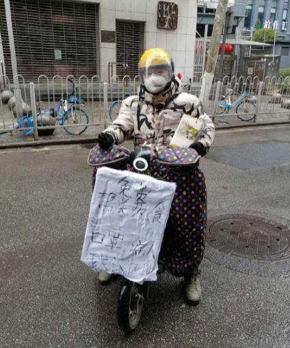
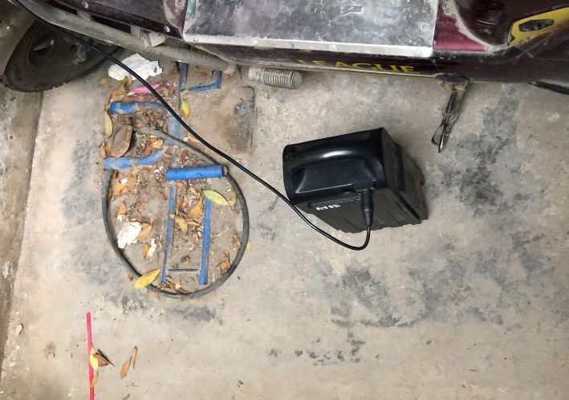
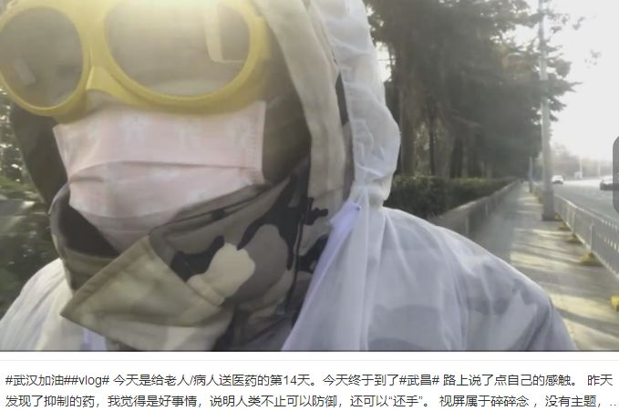
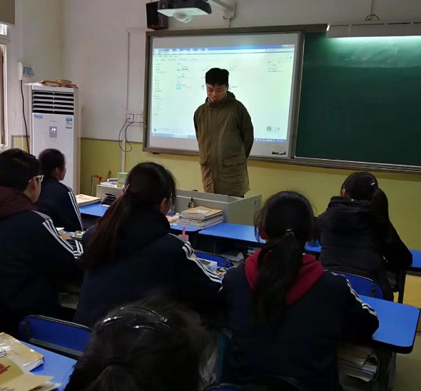

武汉街头的义务送药人
原文链接 备份链接 吴悠和他的朋友们就在其中。截至2月13日，他们已经为500多户求助者送去药品和防护物资。 全文4724字，阅读约需8分钟 ▲1月25日，吴悠在电瓶车上挂上“免费帮送药、食、口罩”的牌子。受访者供图 *新京报记者 肖薇 …

摘要：从2020年1月23号开始，吴悠抱着“应该做点事”的想法，变身“骑手”，骑着他的小电瓶车，奔波在武汉的大街小巷，给物资匮乏的病患家庭送去口罩、酒精和药物。目前，他和他的学生专门给250个家庭送药。加上之前送的，现在大概送了500户。
文 | 张楠茜
编辑 | 林鹏
武汉人吴悠的Vlog里，最常出现的是夜晚的空旷街道、黑压压的马路，他的电瓶车打出一团明黄的灯光印在地上，旁边伴着他臃肿的影子。车往前开，镜头摇晃，吴悠自言自语着今天又到哪里送药，疲惫的声音伴着呼呼风声。
电瓶车是黑白色的，车头搭着彩色波点的挡风棉袄，车灯下有个小篮子，平时塞满物资，篮子空了，说明这天的任务完成。吴悠摘下蒙着水汽的黄色边框护目镜，额头和眼下有两道平行的印痕。
吴悠今年26岁，是土生土长的武汉人。新型冠状病毒肺炎疫情扩大前，他是正在武汉一所中学实习的老师、辅导机构的兼职老师。他爱好广泛，以前留学学过录音工程，拍电影、MV，平时还搞搞说唱。
从2020年1月23号开始，吴悠抱着“应该做点事”的想法，变身“骑手”，骑着他的小电瓶车，奔波在武汉的大街小巷，给物资匮乏的病患家庭送去口罩、酒精和药物。
发烧的病人拿到药，有了几天缓冲期，去社区登记、等床位住院，再坚持下来。
大多数时候，他不敢停留太久，很多求助者只在防盗门猫眼里看到他的头顶，有时候他们甚至背对背说话。吴悠说，重要是药物能送到对方手上，自己不是英雄，也怕感染。
武汉变憔悴了，二十多年来他却第一次真正地注视这座城市。有一次送药回来，开过空旷的首义广场时，他停下发了一会儿呆，突然领悟到武汉人的精神——只要认为是对的，就先“搞了再说”的江湖气。
以下是他的讲述：
“一个人戴口罩没用，都戴才行”
我是武汉香港路一家培训机构的老师，也在一所中学实习，担任老师，学生都是00后。疫情扩大后，学生很害怕，我不知道应该怎么去安慰他们。
我爷爷以前在部队里负责卫生，当时他在家看着电视新闻，说了一句“一个人戴口罩没有用，都戴才行。”我不断想起爷爷说的话，不喜欢宅家里，也不想做局外人，想告诉学生，虽然自己不是超级英雄，但可以尽力解决一些问题，所以开始送家里囤的一些口罩给别人。
大年初一，我拿了300个口罩出门，一包50个，骑车沿路发。那天是个阴天，街上没什么人，没发出去。后来我到小区居委会，消息一传十，很快发得只剩100个，又到隔壁小区，不到两个小时就发光了。
很多人都以为我是政府的工作人员，还问我“封城”封多久，我说我不是政府的，“那你为什么发口罩？”我说做志愿者的，他们也没有反应过来。
几天后，我的学生加入，他骑单车，我开电瓶车，我们写了个牌子“免费帮送口罩、药物”。

吴悠/图源微博
我还记得第一个求助者，她发烧了，家附近什么都没有，让我送退烧药。我去药店买了阿莫西林、头孢，骑电瓶车8公里，到约定的地方，把药放下，掉头，看着他男朋友出来拿药，隔着马路跟我吼了声谢谢，还在那放一包烟给我。
才“封城”时，物资非常紧张。有一天早上，我们跑遍5公里内的所有药店，只找到一盒连花清瘟胶囊，还是个有草字头的盗版（“莲”花清瘟）。有一次，我们只能把一板胶囊拆开，这家给一半，那家给一半。阿比朵尔的价格翻了三倍。口罩鱼龙混杂，消毒酒精的价格也在翻倍。（编者注：2月4日，中国工程院院士、国家卫健委高级别专家组成员李兰娟和她的团队在武汉公布治疗新型冠状病毒肺炎的最新研究成果。他们发现阿比朵尔能显著抑制冠状病毒复制，建议列入国家卫健委新型冠状病毒肺炎第六版诊疗方案。）
开始只有我和学生两个人，随着更多人加入，我们的分工更为明确：线上志愿者登记药物需求，朋友帮忙寄外地的物资进来，我们提前规划路线，再送给求助者。
现在我们有个群，专门给250个家庭送药。加上之前送的，现在大概送了500户。
送得最多的是退烧的奥司他韦，一盒管一天，成人版的没有了，大家都吃儿童版，所以耗量大。现在武汉人已经有默契，像阿比朵尔这些药很难买，大家都不会开口问了。
我们前一天晚上会按求助信息来设计第二天的路线，有时候一两百米就纠结蛮久，路线最好是圆圈，一趟走完，覆盖的面积越大越好。
我一次会给一户送4天的药，上午11点出门，送完回，有时候搞到凌晨一两点。我的电瓶车一块电池跑两个小时，50公里左右。这小电动车本来是拿来买菜、散散心，现在跑了快1000公里了。

骑行途中充电/受访者供图
为了省空间，我把包装盒拆了，带着一大袋药，到了直接抓：连花清瘟4板，奥司他韦50袋，再配上380毫升的酒精、20个口罩，像某种形式的套餐。
比较头疼的是，每隔三四天就要找药的新渠道，连花清瘟、奥司他韦、莫西沙星，一个个轮着来。找到一批歇一口气，再找下一批。最开始找我朋友的药厂，现在他也托了三、四层关系了。
第一批药到的时候，我蛮开心，就带了一整箱出门，电瓶车都没地方搁脚，还挂了五六个塑料袋在车头，酒精塞在书包里，整个人臃肿得像轮胎人米其林。
但问题来了，到目的地停车，我不能把药就放那里，怕丢。所以只能抱着一大箱药上楼，有病人还以为我要整箱给他，但那个药一盒就能管三天，还有副作用，所以也没送多少出去。
除了主流的几个药，还有人要治乳腺癌、高血压、心脏病之类的药，所以又拉了个对接非新冠肺炎疾病的药的群。
最开始我是免费送药，现在部分药收药店价，口罩和酒精免费送。一方面是经济压力，垫了一万多了，另外是为了防止“伸手党”，或者有人囤药。之前有人说一个口罩没有，让我送，有人把我的微信直接发到各种家族群、同事群，都来要药，这违背我们给病人救急的初衷，原则是病人、老幼优先。
防盗门猫眼里只看到我的头顶
我的装备一般是，戴个摩托车头盔，包住下巴，冲锋衣材质的羽绒服，还有皮手套，为了好擦拭酒精。现在会穿防护服，戴上护目镜、手套。手套每天换，但防护服、眼镜物资紧张，回来消完毒，挂外面通风。
一开始会有些忐忑，想到电影《传染病》的场景，不敢和对方有过多交流，有时我敲了门就闪，他们最多在防盗门猫眼里看到我的头顶，有时为了省时间，就像丢保龄球一样把东西丢在楼梯上，再打电话说一声。
特殊时期大家讲话很干净利落，都直接问“XX药有吧？”，没有废话。
有一次求助的人出来拿药，穿着个黄色的睡衣，像《无间道》里接头一样，出现的时候就是个背影，靠着栏杆，他说，是你吧？我就说，是，给你放那了。
有时候给老人送药，老人说不清楚地方，到了目的地还会在那里徘徊很久，花半个小时找到地方。有些老人不知道我是谁，我又忘了求助人叫什么，就蛮笼统地跟老人说，“你亲人喊我来给你送的”，老人又问多少钱，我说，你亲人给过了。
把东西送到人手里就行，尽量不接触，但也有意外。
1月27号，给已经确诊新冠肺炎的病人送药，对方突然走得很近，给我鞠了一躬，出来我就把一次性雨衣丢进垃圾桶，还倒了84消毒水，防止环卫工感染，回到家喷酒精，脱掉外套，对着高温暖气一直照，再洗热水澡。
当时有新闻报道，8楼的病人从来没去7楼，但7楼的人被感染了，听到这些很极端的例子会想，万一自己就是下一个呢？
1月30号给一个疑似病人送药，他拿着药就走过来了，我在电动车的右边，他在左边，他想给我转账，我说不要紧，他估计也没听到，把头靠过来还想说什么，我就假装接电话走了。
回家立马喝药，我心脏之前做过手术，莫西沙星对心脏有副作用，那天也吃了。
不过后来想开了，大不了一个我没了，至少救了两个，那也多赚了。后来听说，那几天的送药非常关键，吃药的几天时间让他们有一个缓冲期，联系好了医院。
直到现在，我妈还不知道我在干什么，前几天我上了卫视，不过刚好她去买菜了，没看到。

吴悠的Vlog/图源微博
我爸知道我在做的事情。他有一次发信息鼓励我，说很为我骄傲。其实我们父子两个都不太会表达感情，他从来没有给我发过六七排这么长的消息。
偶尔压力很大，会想到一线的医生，他们可能还比我年轻，那么大压力，我不能不扛压。
有一家人让我印象很深，80多岁的老夫妻染了新冠肺炎，50多岁的儿子和儿媳妇去照顾他们，感染上了，20多岁的年轻人再去照顾他父母，又染上了，传染给了自己的媳妇，一家人从上至下6个人，除了小孩，都染上了。
他们就住在我对面的小区，状态最轻的孙媳妇向我求助过。我看到她的朋友圈，很焦虑。现在一家人都住进不同医院，老人很严重，用上了呼吸机。
理论上来讲，他们是在“封城”之前感染，那时候消息是说“有限人传人”，他们也没有引起重视，一开始觉得是流感，不知道怎么去防护。
我的活动区域在汉口，但求助者也常问，武昌、青山什么时候来？有时候跑得远，青山单程都是60公里，但我还是会去。总说第二天休息一下，第二天也和学生出来了。
有时候崩溃是心理上的。曾经有一位妈妈求助，她没确诊，但很绝望，丈夫不在了，总是会说万一自己没了，孩子也会跟着走之类的话。怕她有个三长两短，我把电话留给她，跟她说有事就找我，24小时不关机。
也有一些很温暖的瞬间。有一天我送药到晚上快两点，离家30公里，手机和电瓶车没电了，我在群里说了一声，病友、朋友立马行动起来，一个人骑自行车过来送充电宝，一个人走过来送充电线，我推车两三公里，另一家人帮我把车抬到楼上去充电，那天到家已经是凌晨五点了，心里却很感动。
武汉人的精神，“搞了再说”
之前我奶奶脑出血，人还清醒，CT检查出没有新冠肺炎，爸爸想带她住院，但跑了好几家医院都没有床位。2月9号我发了个微博，求助大家的意见，第二天就看到至少100条私信，最后转发接近两万条。
协和、同济医院的教授看到情况，打电话过来，看了奶奶的CT，都说可以在家静养，后来送奶奶去了中心医院打针，情况稳定下来。
我受到过别人的帮助，也在帮助别人。现在很多人也想加入我们，我们挑人会比较谨慎，尽量选对城市有关怀的本地人，再就是身体能吃得消，不能三天打鱼两天晒网。前段时间听说有个志愿者，把一个车的物资接走了，不知道到哪里去了，那都是要送到医院去的物资啊，其他志愿者报警了。
我是90后，平时我是蛮有个性的人，在培训班教传媒，在一所中学是正在实习的老师，留学学过录音工程，拍过MV，搞过电子竞技。但真正到了（需要）共性的时候，也会有很强的同理心。
以前武汉是有丰富的夜生活的，现在晚上一片漆黑，六七点钟就啥都没有了，我住的地方离江滩很近，现在也封了，连想买个手套、借充电宝都没有，走几条路才只有个孤零零的便利店。

吴悠在上课/受访者供图
以前说“现在的生活来之不易，你要好好珍惜”，都是很敷衍地说，现在觉得，那真不是一般的来之不易。这个地方变得憔悴，却更爱它了。有一次送药回来，路过纪念辛亥革命的首义广场，以前车水马龙，现在光秃秃，很空旷。
我站在那里休息了一会，打开手机查辛亥革命的历史，是因为消息泄露，在武汉提前引爆的一场革命。易中天评价武汉人是“搞了再说”的精神，之前没有感触，但现在我和学生、身边的朋友，在做这些事情的时候，只要认为是对的，就搞了再说，“60公里那么远回不来了怎么办？”——去了再说。
这次很多媒体都来采访我，一开始还想官方一点，教科书一样、在国旗下讲话那种感觉。但其实我内心很简单，四个字“搞了再说”。一开始觉得送完今天就结束吧，但现在也做了这么久，认为是对的就做下来了。
疫情前，我本来有个剧本和好朋友一起合作，要到美国一个小电影节看看。机票退了，电影节也取消了。我那个武汉朋友在美国，美国有乙型流感，武汉有新冠肺炎，他进退两难，后来去了深圳。
疫情结束之后，最想出去旅游一趟。这个事情之前，我觉得自己是蛮普通一人，无非爱好多了点，现在感觉自己有些变化，多了份担子，不太熟悉的人以前会觉得我冷漠，这次也重新认识了我。

吴悠送药途经汉口中一路隧道/受访者供图
后台回复”读者群”, 加入更多讨论

小昼
微信扫一扫赞赏作者 赞赏
长按二维码向我转账
受苹果公司新规定影响，微信 iOS 版的赞赏功能被关闭，可通过二维码转账支持公众号。
原文链接 备份链接 吴悠和他的朋友们就在其中。截至2月13日，他们已经为500多户求助者送去药品和防护物资。 全文4724字，阅读约需8分钟 ▲1月25日，吴悠在电瓶车上挂上“免费帮送药、食、口罩”的牌子。受访者供图 *新京报记者 肖薇 …
原文链接 备份链接 这一周，有超过500位读者同我们分享了自己关于爱的故事。今天，我们选取了其中的一些故事，以配合这个名为「情人」的节日——今时今日，这一天似乎看起来不合时宜，但正是因为今时今日，我们才该庆幸，还好，我们还有爱情。 策 …
原文链接 备份链接 非常时期，武汉成了全国人民挂念、祈福的城市。封城后，武汉人民的真实生活是什么样？ 正和岛自1月26日起特别推出《叶青：我在武汉疫区的第N天》专栏。叶青是一位定居武汉40年的市民，也是一名学者和官员。接下来的一段时间， …
原文链接 备份链接 点击上图，一键下单** 【武汉现场：抗击新冠肺炎】** 记者 | 吴琪 我从没见过这样的汉口火车站。 1月23日，大年二十九。上午8点40分、50分，墙上的时钟往前走，随着一拨拨人上车，庞大的候车大厅，像被一支巨大的 …
原文链接 备份链接 有武汉人滞留在外地，就有外地人滞留在武汉。 1月23日凌晨，武汉宣布封城。 2月10日，湖北省以外的地区陆续开工，这让滞留在武汉的人更希望知道出城的日期。 恰值人口高峰流动期，没有数据统计滞留在武汉的人到底有多少。但各 …